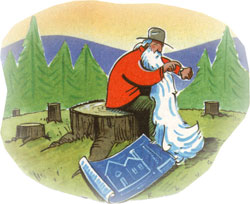

ILLUSTRATIONS: DAVE KLUG
A little-known exemption could keep your home out of creditors' hands. - By Jean Vernon
Q: My husband has asked me to research the law to find out how to "homestead" our house. He says this is a procedure where by you make your home safe from seizure as part of your assets, as in a court judgment, for example. In searching law web sites and even the law library I found nothing under this heading. Have you heard of this? Is it called by another name? Do you know anything about it? Where I can get information about it?
-Jean Damon
McKinleyville, CA
A. It is no wonder you are having difficulty obtaining information on the homestead exemption. California does not have a legislative phone number for citizen information on civil laws, at least that I could find.
The homestead exemption was enacted by many states to protect the family home against being sold by creditors. State laws differ, but all essentially set a monetary amount that a family will retain after the home is sold to repay debt. Naturally if the debt is less than the homestead exemption the creditor probably can't force the sale of the home. Most states limit this action to unsecured creditors; secured creditors, like mortgage holders, still have rights to the property as provided for by law. In some states the homestead must be filed with the county. Elsewhere it is an automatic exemption. Every few years most legislatures raise the homestead exemption amount to reflect current economic conditions.
The homestead exemption laws are complicated. You may call the California Association of Realtors at (916)444-2045 and ask their legal department for information on the subject, or try their web site: http://www.car.org . Go into the legal section, where there will be questions and answers regarding the homestead exemption. Your own legislator's office may be able to provide you with copies of the civil law for the homestead exemption. Good luck.
Hello Jean l have a situation where I share an easement road with my neighbor to the south. My lot is #3, his lot is #2. The easement is actually owned by the neighbor to the east. There is a Declaration of Covenant which states "Any owner or subsequent purchaser of lots 2 and 3 shall bear the responsibility for 50% of the financing, construction and maintenance of such private road contained within the above referenced short plat .... Owners of lots 2 and 3 within the above referenced short plat, who are served by such private road, may sue and recover from any owner of any lot within the short plat (lots 2 & 3) which is similarly served who refuses to participate in the road construction, financing and maintenance. Such owners who refuse to share the costs under the percentage set forth above shall be liable for any damages resulting from such refusal, plus costs of suit and reasonable attorneys fees."
I tried recently to come to an agreement regarding the road maintenance required. I was told by the owner of lot #2 that I had full responsibility to have the work done. I said fine, but you will be responsible for 50% of the cost. I sent him an estimate of work to be done, then a copy of the work accomplished. I've given the owner of lot #2 a time limit in which to respond. If he doesn't respond with payment of his 50% share for the work done, I'm considering taking him to small claims court in order to obtain his share of the cost. Based on the Declaration of Covenant, l believe I'm doing the right thing legally, morally, and logically. Do you agree?
-Terry Findley
Kalama, WA
A. I certainly do agree you have conducted yourself well in this case. It might be a good idea to have a short consultation with an attorney before pursuing this, even in small claims court. The advice you receive will be invaluable, as the attorney will help you devise the most persuasive strategy possible. I wish you well in this; it is unfortunate that some neighbors force folks into these actions no matter how civilly they are treated.
Q. My property is located in the City of Yukon, Canadian County, Oklahoma, and I am having a problem with the Assessor's Office. I am enclosing a copy of a map showing the location of the house and of the easement area. which has been a constant irritant while living here. At my last meeting with the Assessor's Office I felt they simply overlooked my original complaint and talked about the house measurements. They came the same day to confirm their original assessment figures which I had no quarrel with. My problem is the fact that the City of Yukon drainage ditch is not on the city easement but on my property, which creates several problems for me.
1. I cannot enclose my property.
2. I cannot prevent traffic from using the ditch for motorcycling, walking, kids roller skating, and dozers.
3. A new sewer line was installed on property behind mine which resulted in the contractor replacing the fence for that property incorrectly, reducing my land area. I have photos to prove this. I am now paying taxes on land I do not have the use of.
Can you give me a clue as to my options in this matter?
-Ronald D. Chapman
Yukon, OK
A. You have posed interesting questions and they will be dealt with in reverse order. As to the fence being rebuilt in the wrong place, you should definitely try to get that contractor to reinstall the fence correctly. In many states if you keep silent for a number of years on that type of wrong it is presumed that you agree with it and may lose your right to object to it. If you have already lost your right to object you need to have the Assessor correct your legal description to reflect the smaller lot size. You may have to have a boundary line adjustment. The Assessor's Office can tell you how to proceed with this.
As to traffic in the drainage ditch, the ditch must have existed when you bought your house and land. That should have put you on notice that there might be traffic on the ditch easement. You chose to buy the house anyway and thus also lose some rights to object to it. Along with your map you also enclosed a statement by an engineer that your improvements do not encroach on any other property, nor is your property encroached upon. In view of this statement it is unclear why you state the ditch is on your property rather than the city easement.
It is also unclear why you cannot enclose your property with a fence, unless there is a specific ordinance against it. In any case that really has nothing to do with the Assessor's Office. I hope these comments get you on the right track with the Assessor's Office.
Send your questions to "Country Real Estate," c/o Mother Earth News, P. O. Box 129. Arden, NC 28704 or via e-mail at MEarthNews@aol.com Enclose a photo and we'll make you famous in the bargain. Please keep in mind that state laws vary and that this column is no substitute for local legal advice.
LANDOWNER ALERT! Throughout the country more and more laws and regulations are being enacted every day that directly affect the rural landowner. These laws and regulations are often reactions to abusive situations by a few individuals but when passed, can have severe consequences for the rural population as a whole. For example, in Washington State, to prevent large ranches from being bought, logged, then divided into small parcels and resold, there is a new law that prevents landowners from building on their land for six years after any logging operation takes place. Whether the landowner thins for disease, pest control, or other forest health measures makes no difference. In the past, after thinning their forests most owners used the profit for improvements, but no more. An elderly woman who fears trees may fall on her house may not build a garage until six years after the trees are cut.
On the county level in that state, the commissioners decided that permits and the related inspections and costs were required for all unoccupied farm outbuildings, even hay sheds without walls. In a grassroots action, the farmers, ranchers and other rural landowners in that county met with the commissioners and had them repeal the new regulation.
These and other new laws and regulations throughout the country are a product of a bureaucracy run amok. They are enacted without fanfare, usually by well intentioned people who have no idea of their negative impact on the rural economy. Sometimes bureaucrats push regulations to advance their own hidden agenda, and that might be in direct conflict with the desires of the populace as a whole. They are difficult to fight, as every agency seems to be busy creating these new laws and regulations and working people don't have much extra time for involvement. But landowners need to keep themselves informed and should make the government answerable for this barrage of stifling regulations. Getting involved really does make a difference, as in the case of the Washington county repeal of the outbuilding permit requirement.
|
|
 |
|